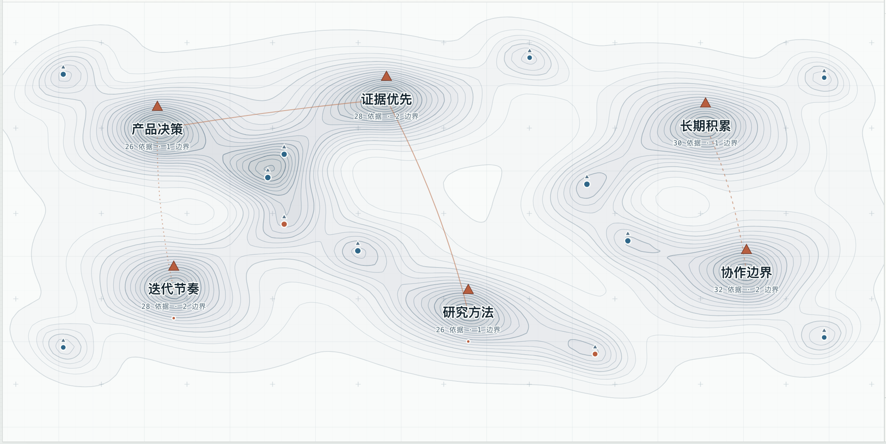
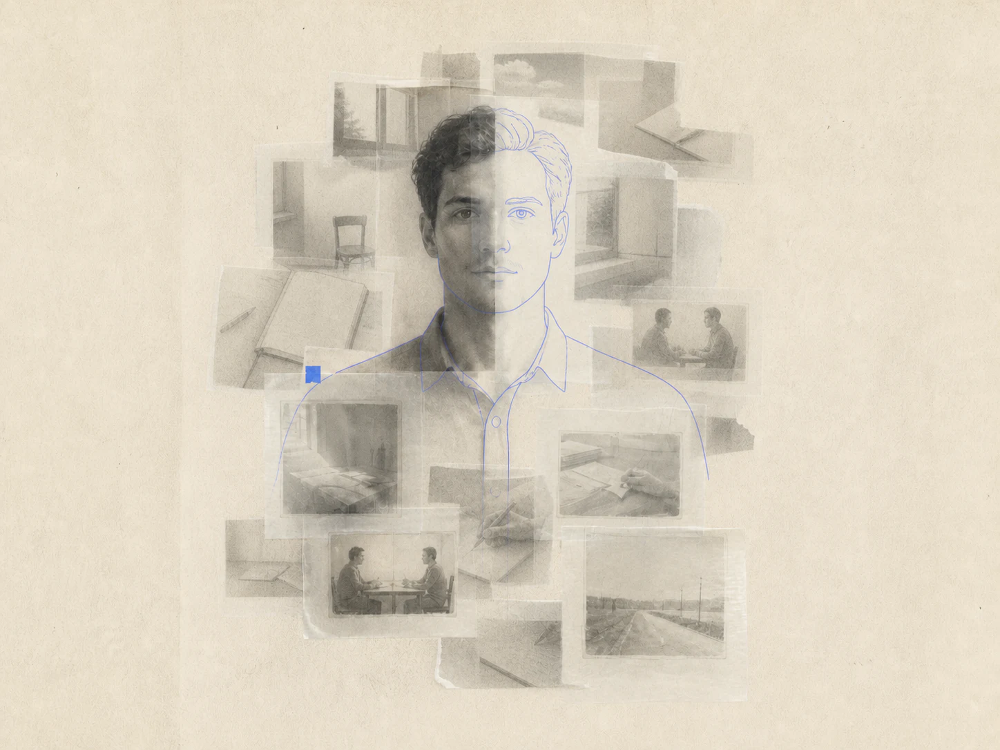

今天 10:42
刚才在路上又想到那个 Context 的问题
每次对话都留下一个局部的我
但它只停在这段关系里
Memento
“Memory is not a record.
It's interpretation.”
我想让这些局部
被持续理解成一个完整的人一位运行在电脑里的自动笔记与认知秘书
进入真实的认知主页
查看记录、地形与 Memento 对我的当前理解
点击三张图，查看每一种价值如何真正发生
原文、时间、来源与当时语境被一起保留
基于 20 天、261 条固定汇总与 6 条代表记录；不读取真实目录，不连接模型或定时任务。
AI 他人 网页 文档和语音承接了不同处境中的我
这些局部都属于我 却没有一处能够持续理解完整的我
刚才在路上又想到那个 Context 的问题
每次对话都留下一个局部的我
但它只停在这段关系里
这个窗口记得我刚才的判断
离开以后却很难继续
每段对话都承接了不同处境中的你，也只拥有这一段关系里的局部
把这个理解留下来，下一次继续
数据留在本地 理解可以被调用
记录原始内容 时间 来源和现场
保留判断发生变化的理由
新的证据继续修订当前理解
刚才那个变化应该留下来
回去以后再整理
每段对话都成为我的一部分
却没有一处保留完整的我
现场先被完整留下 Agent 再整理并连接
反复出现的关系逐渐成为能够追溯的认知地形
五种方式任选其一，都写入同一份保留时间、来源与语境的本地事实
⌃1直接记录当前窗口问题在于意图无法跨过窗口积累
⌃2加备注保留语境刚才那个变化应该留下来我的判断
变化的理由比结果更值得留下
⌃3选标签帮助重找⌃4截图屏幕现场⌃5语音主动录音原始声音 本地转写
刚才那个变化应该留下来 回去以后再整理
Agent 整理原意并保留来源，同类记忆随后跨过时间逐渐连接
原始语音与转写保持不动
时间 来源和现场一起保留
原文与整理结果共同保存
未来可以回到形成现场
主题继续保留形成它的记录
新的证据仍可修订当前关系
点是可用记忆，线是已确认关系，等高线呈现跨时间的证据积累
Memento 从完成归并的记忆与已确认关系生成地图
新证据继续进入，山体也会随之改变
原文、时间、来源和整理结果一起保留
只有完成校验并保存的关系才会进入地图
同一方向上的证据逐渐围合，形成山峰、山谷与当前边界

每句话都带着依据 边界与修订历史
点击判断或图钉 可以回到形成它的记忆

你会先确认边界再推进 重视能够回到原文的证据 也在把一次次经验变成能够复用和接手的方法
从真实记录开始 一步步形成理解
新证据进入后 解释变化并更新这条理解
我倾向
谨慎推进
边界明确后
要求立即开始
谨慎发生在
确认边界之前
我会先确认边界
方向清楚后迅速推进
一次次输入 让它逐渐理解一个完整的人
每条判断都能回到依据 也允许我修订或撤回
Memento 按任务范围交出带来源的长期理解
调用什么、调用多少，始终由我决定
judgment先确认来源和失败条件 再形成判断
sources: R-019 R-026 R-034direction让新的任务从已经形成的理解继续
themes: 长期积累 方法复用boundary在高风险改动前确认边界 随后快速推进
由用户确认 · 可以继续修订读取相关理解 来源和适用边界
回传本次交流形成的新线索
你重视判断形成的依据，也希望重要修改先确认边界
来源 R-019 · R-026 · R-034我会先明确这次调整影响的叙事层级，再集中修改相关区域
当目标与边界清楚后，你倾向直接推进并快速验证
返回 Memento · 等待确认前面的故事收束成五个连续动作
每一步都能回到来源
保留原文、时间、来源和现场
逐条改写与归类，同时保留原始依据
反复出现的关系逐渐成为长期主题
多个主题收束成有证据、边界和版本的当前理解
通过 Memory.md、MCP 与本地工具带入外部 AI
最后留下的，是一份可以持续校准、也能让每个 AI 从同一个你开始的个人记忆
返回产品预览